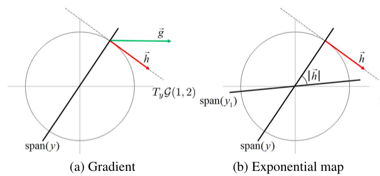

Riemannian approach to Batch Normalization
Мотивация
Техника Batch Normalization стала обычной составной частью DNN. Она помогает избавиться от т.н. internal covariate shift, и приводит к более стабильной и быстрой сходимости сетей с большим числом слоев. Автор оригинальной статьи говорит, что это достигается за счет инвариантности прямого и обратного проходов от линейного преобразования весов, что позволяет использовать бОльший learning rate. Пусть $x$ – активации предыдущего слоя, $w$ – вектор весов, $z = w^Tx$, тогда это свойство можно записать следующим образом:
$$ \text{BN}(z) = \dfrac{z - \mathbb{E}[z]}{\sqrt{\text{Var}[z]}} = \dfrac{w^T(x - \mathbb{E}[x])}{\sqrt{w^T R_{xx} w}} = \dfrac{u^T(x - \mathbb{E}[x])}{\sqrt{u^T R_{xx} u}}$$
где $u = w/\|w\|, \, R_{xx} = \text{Var}[x]$
Авторы рассматриваемой статьи говорят, что такое свойство может в то же время приводить к проблемам за счет существования бесконечного количества конфигураций сети, которые одинаковы с точки зрения forward pass, но имеют разную норму параметров, что может привести к сильной чувствительности к параметру регуляризации.
Идея
Давайте решать условню задачу оптимизации с $\|w\| = \text{const}$. Но это сложно, поэтому давайте перейдем в пространство, где веса, отличающиеся домножением на константу, представлены одной точкой.
Математика
В качестве такого пространства авторы предлагают использовать римановское многообразие – Grassmann manifold $G(p, n), \, p < n$. $G(p, n)$ – множество всех линейных подпространств $\mathbb{R}^n$ размерности $p$. Если теперь взять многообразие $G(1, n)$ то точка на нем будет соответствовать $\{ \alpha w \, \big| \, \alpha \in \mathbb{R} \}$ для некоторого $w \in \mathbb{R}^n$, а это ровно то, чего и хотелось. В качестве представления точки на таком многообразии предлагается брать вектор $w$ с единичной нормой. Легко представлять себе $G(1, n)$ как единичную сферу.
Чтобы теперь запустить SGD на таком многообразии нужно много теории римановских многобразий. По факту обычный градиент $g$ (посчитанный в $\mathbb{R}^n$) проектируется на касательную плоскость к точке в которой градиент считается ($y$) и получется градиент на многобразии $h$. Затем по геодезической из точки $y$ в направлении $h$ необходимо пройти длину $\|h\|$ и попасть в новую точку $y_1$.

Из данного алгоритма авторы также делают SGD c Momentum и ADAM.
Регуляризация
За чередой запутывающих незнакомого с римановскими многообразиями читателя формул с отсылками к книжкам с объяснениями следует небольшой раздел Regularization using variational inference, который по-началу тоже норовит блеснуть своей математичностью. По факту авторы говорят, что к предложенному методу неприменима довольно распростроненная L2 регуляризация (и правда –- $\|w\| = 1$ всегда). Поэтому они предлагают (правда они?) довольно интересную регуляризацию, которая в итоге представляет следующий лосс:
$$ \dfrac{\alpha}{2} \|W^T W - I\|^2_F = \dfrac{\alpha}{2} \sum_{i \neq j} \langle w_i, w_j \rangle^2 $$
Минимум такого функционала достигается, когда все столбцы ортогональны друг другу. Таким образом запрещается сильная зависимость между столбцами матрицы.
Эксперименты
Авторы сравнивали свой подход с обычным batch normalization в аспекте скорости сходимости и качестве на валидационный выборке. Для этого они взяли несколько популярных архитектур и заменили стандартные слои батчнорма своей реализацией.
Про скорость сходимости они пишут, что для обучения с обычным батчнормом лосс уменьшается только при понижении learning rate, в то время как их имплементация уменьшает лосс постепенно. Неясно, что им мешало для обычных сетей уменьшать рейт линейно или сделать exponetial decay и сравнить. Тем более, что предложенная процедура оптимизации медленнее обычного SGD или ADAM в 2.5-3.5 раз, как пишут авторы.
Применив свою имплементацию и оптимизацию они смогли улучшить accuracy score для ряда известных архитектур, хоть и на немного

В заключении авторы говорят, что данную технику можно применить также и для других техник нормализации – weight normalization, normalization propagation и layer normalization.
Резюме
Интересная, хоть и не новая, техника сведения задачи условной оптимизации к безусловной за счет использования римановских многообразий. Кроме того интересное и проработанное расширение обычного римановского SGD до популярных Momentum и ADAM и интересная регуляризация.